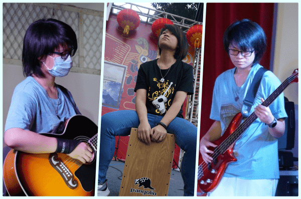

個性＆興趣
我的個性外向，善於溝通，有好勝心，能察覺身邊人的小情緒，也就是所謂的「共情」能力，我還有很強的想像力和創造力。喜歡看天空，看各種星星太陽月亮。
我有三個秘密武器，讓我有源源不絕的創作靈感，分別是「靈敏的耳朵」、「多愁善感的心」和「天馬行空的想法」。
4歲時家人便送我去學習鋼琴，從那時開始，我跟音樂結下了不解之緣，成長的路上，我陸續學習鐵木琴、吉他、Bass和爵士鼓，使我成為跨節奏組及旋律組的樂手。
從國小開始，我對寫作就十分擅長，手動的速度總趕不上腦袋運轉的速度，我也十分享受寫作時那種沉靜忘我的感覺，我的寫作模式無非是以故事呈現，基本上都是以自身故事發想，因為我認為只有親身體驗過的才能真正稱作為感受，世界上沒有真的感同身受。寫作對我來說不只是考試項目，而是一個將身邊人的小情緒與周遭其他人事物結合後，在腦中浮現的畫面記錄下來的媒介。
音樂和寫作成了我生命中不可或缺的兩個元素，國中時在吉他社接觸到了學長的原創歌曲，讓我體會到寫歌是一個融合了兩者的創作方式，而且入門其實沒有想像的困難，從此開啟了我的詞曲創作之路。有了幾首小品後，我尋思著用什麼方式記錄下它們，上網一番搜索後，開始學著使用ipad中內建的Garageband練習錄音，剛開始什麼都不懂，不懂的剪輯，不懂得分軌、效果器和比例的調整，只能一遍遍的從頭再從頭，卻也練就了我收音遠近和One take完成的能力，隨著時間的推進，我的功力也逐漸進步，現在不僅是使用電腦專業錄音軟體Logic pro來錄音，家裡也架設了一個小型宅錄的錄音室，不僅錄製自己的歌曲，也幫助許多朋友記錄下他們的作品。

靈敏的耳朵，使我聽到不僅音樂的細節，更聽到人心的歡喜傷悲，社會中的起起落落，而多熟善感的心讓我成為朋友們傾訴的好對象，也讓我聽到更多人生不同的故事，彷彿一個影子跟在他們背後，走過他們走過的，看他們看過的。一切加上一點天馬行空變成為了我創作源源不絕的靈感，紀錄著生命每一刻的笑容與淚水。